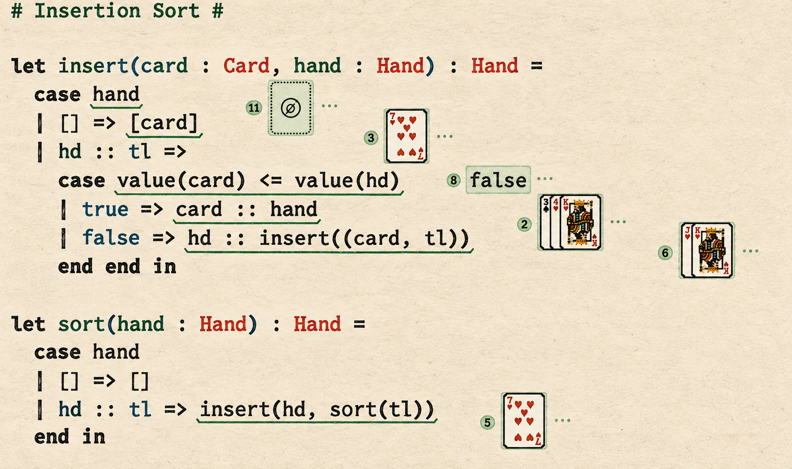
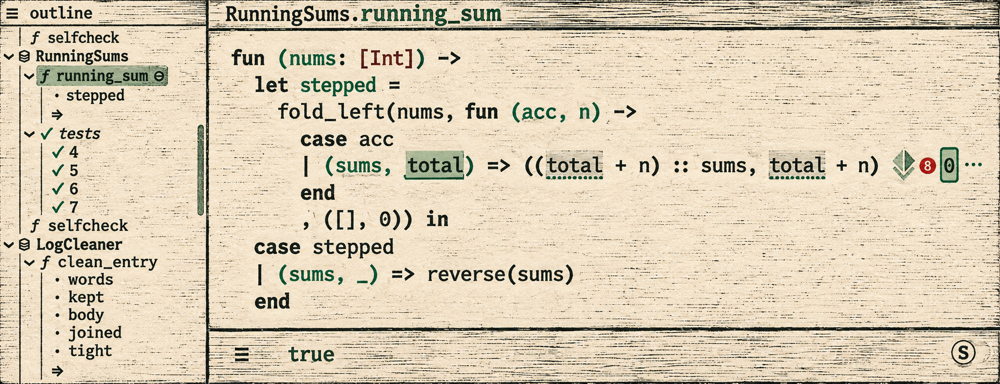
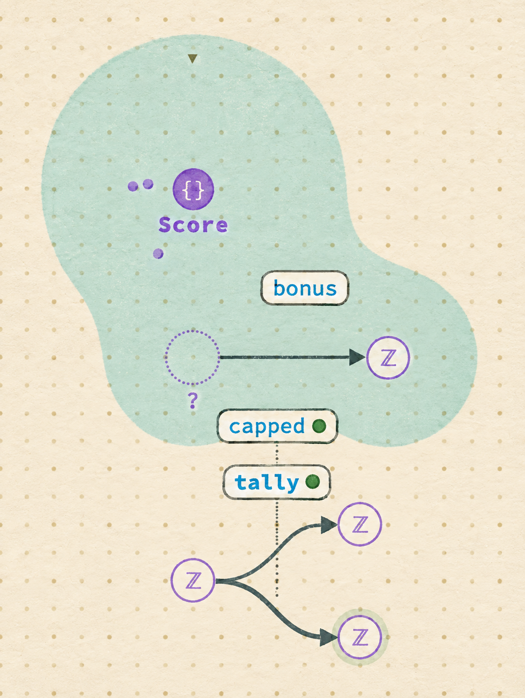
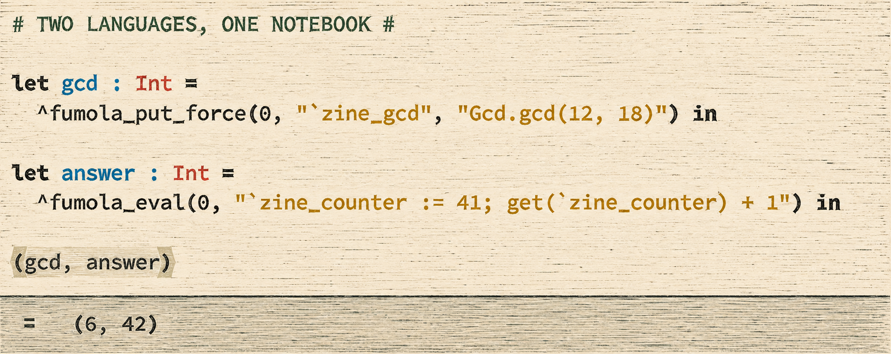

{kind=link}
The cabinet is open.
Probes IV reaches dev. Modules II tests new boundaries. Constellation becomes an editor. Fumola connects two runtimes.
In this issue
The big landing
MERGED INTO DEV / PROBES IV
More room to inspect a running program.
{kind=link}

Andrew Blinn’s Probes IV reached dev on September 8, merged by Cyrus Omar. A sample can now expand into a multiline drawer below its source line. Each probe has its own drawer state; values longer than fifteen rows scroll within that space.
The Cards example shows why room helps. Its insert function compares a card with the first card in a hand, then places it before that hand or recurses through the tail. Probes expose the comparisons and intermediate hands. The renderer comes from Alexander Bandukwala’s earlier work, integrated into dev this week. Small rich views stay inside the chip, preserving its controls; taller views open the drawer.
Automatic rich views are on by default. A probe can return to text; tables remain an explicit choice.
Auto-probe now offers Off / Caret / All: manual placement, the current top-level definition, or one probe per row across the program. Adding a probe also refreshes analysis so a cached evaluation cannot leave it empty until another edit.
Step-into reaches indirect calls, sample navigation scrolls its selection into view, and menus open on right- or alt-click. Try Documentation → Cards on dev to follow a recursive call through its arguments and results.
After the landing
OPEN ISSUES / A MERGED CI CHANGE
The first drawer reports.
Three interaction reports and a recursive-ascription regression followed the Probes IV merge. All four remained open on September 11.
01 / INTERACTION
Missing menus.
Closing a tall table can leave its renderer selected after the picture disappears: the menu still says “Hide table.” Recovering it requires hiding and selecting it again (#2519). Inside the drawer, the sample context menu is unavailable; right-click can fall through to the editor’s menu (#2520).
Short tables expose a separate fault. A positioning rule left from the old modal anchors the column menu below the entire drawer. Tall, scrolling tables use a sticky header and avoid this particular problem (#2521).
02 / PERFORMANCE
A cost inside recursion.
In #2524, a recursive sum with an ascription on each call exhausts memory at 12,800 calls after the merge. The reporter’s pre-merge version completes; removing the ascription also restores roughly linear behavior.
The report traces the growth to copying and retaining call-stack identifiers at each relevant evaluation step. Removing the ascription changes the scaling without changing the recursive structure, giving the investigation a narrower target than recursion itself.
03 / CI: A FAILURE THAT CAUSED A NEEDLESS REVERT
Matthew Hammer’s comment on #2482 gives flaky tests a concrete cost: his team reverted a good Fumola commit after an unrelated evaluator property failed. Alexander’s merged change disables two unstable randomized properties, retains their bodies for compilation, and runs fixed counterexamples instead.
Those checks expect the evaluators to disagree. If the examples start agreeing, the checks fail with a reminder to restore the properties. They do not pin an exact wrong result or fix either semantic bug. Matthew also notes that the separate Pattern equivalence test can still exhaust memory.
issues opened
issues closed
issues outstanding*
Opened and closed: September 4-10 UTC. *Outstanding on September 11.
The branch garden
MODULES II / NINE DRAFT PRs
Modules, all the way up.
Alexander Bandukwala’s nine-part draft stack makes modules distinct values, repairs their boundaries, and tries a modular standard library.
THE STACK / VALUES → BOUNDARIES → LIBRARY
A module becomes a value with a signature, rather than a labeled tuple. Members evaluate in order and projections resolve by name. One follow-up fixes a revealing bug: let f(x) = … exported the argument x instead of the function f.
Width matching lets a function asking only for name : String accept a module containing both name and age. The function sees the narrower interface. But differently shaped if arms do not silently find a shared signature: the author must write a narrowing ascription.
Abstract members hide representation while retaining identity. Outside a sealed module M, a member can have type M.T. Aliases preserve that identity; independently sealed modules get distinct types.
The middle drafts improve error locations and rules around names. A nested signature mismatch should identify the offending inner definition. Duplicate declarations in a signature are errors; repeated bindings in a module body deliberately shadow earlier ones.
The last two PRs remain early prototypes. Modular implicits explore how arguments are found. The library sketch exposes Int, Float, String, List, Option and Pair, while keeping existing flat names available.
There is a concrete cost to investigate: looking up List.map currently copies a 65-member module value. That cost is unmeasured. Sharing constraints and implicit-resolution design also remain unfinished; the prototypes make those costs and design choices available to examine.
Aiject / the workspace
DRAFT: MODULAR EDITORS / OPEN: AGENT HARDENING
Edit a definition. Keep the program live.
{kind=link}

Andrew’s modular editors open focused cells from a collapsible outline. Each cell has a header and body, while the master document supplies context, tests and results. A probe can collect calls from outside the definition being edited.
The screenshot’s function accumulates partial sums in reverse order, then reverses the list. The probe exposes intermediate totals without opening the rest of Mega 1k. This is the useful promise of the smaller view: its values still belong to the whole program.
One of this week’s fixes repairs a failure of that arrangement. Editing a later definition could leave evaluation stuck on an old result.
The incremental evaluator saw an apparently unchanged enclosing term and reused its answer, although the program below it had changed. The fix includes that remaining program in the term and adds a regression test.
Analysis also works from the affected dependencies. An edit in the PR review’s Mega 4k headless benchmark analyzed 16 of 891 items. Autosave still has a whole-text fallback, so an edit does not avoid all document-sized work.
The related agent-hardening PR waits up to roughly ten seconds for probe evaluation to settle. Edit, view and probe tools gain owner/member paths, and persistence moves to per-chat records. Both PRs remain open.
The check: values in a focused cell must agree with the master document.
Aiject / Constellation
DRAFT #2505 / GRAPH, EDITOR, AGENT
A graph you can edit through.
{kind=link}

Constellation arranges a program by types and definitions. Type aliases become nodes; functions become arrows from input to output. Values attach to their types, and tests to the functions they mention. Small builtin-type terminals keep Int from collecting every arrow in one place.
In Scorekeeper, Score supplies a base of 10, a doubling bonus and a cap of 50. tally adds the base to the bonus; capped limits the answer. For an input of 7, the program returns 24.
This week’s main canvas mode turns selection into navigation. Selecting tally, or Counter App’s update, opens its definition below the graph. Leaving the mode restores the whole program. The relationships help locate a definition; the panel gives access to its source, values and tests.
KEEPING SAMPLES AND MOTION IN SYNC
Value wells needed a matching repair: their samples belonged to the master editor, but clicks and arrow keys went to the active definition cell. The fix routes actions to the owner of the displayed values and outlines the selected sample.
For agent edits, pace separates travel, act and settle; follow controls camera attention.
The animation code moves module hulls with their nodes and holds the camera when the program is already visible. These controls aim to make agent edits easier to follow.
One demo switch with a definition open left the graph blank until reload. Six demos include nested modules, many callers and pipeline depth.
A visitor moves in
OPEN PR / FUMOLA LIVELITS / EXPERIMENTAL
Two languages. One notebook.
{kind=link}

Matthew Hammer’s Fumola integration lets a Hazel document name and use an external runtime. Livelits sharing an instance id communicate with the same store; named thunks give successive edits an identity within it.
The current branch has four entry points. fumola_new declares a runtime and mode. fumola_put_force evaluates inside a named thunk; fumola_eval runs without that wrapper. fumola_with passes a Hazel value across as input. Its example doubles 21 and returns 42. Holes and functions cannot cross this boundary.
Runtime mode matters. Simple is the default and keeps no dependency graph. Graphical records nodes, dependencies and events; one example returns its event log as a Hazel table. Those records are groundwork for repair, which the example above does not exercise.
Two loader changes merged into the Fumola feature branch: source fallback and a manifest that selects a matched JavaScript/Wasm pair at content-addressed URLs, identifying the loaded build.
The runtime remains unpinned, but identifying the loaded build makes stale-version problems easier to diagnose.
A testing gap: translation fixtures cover expected formats, but the evaluator suite skips the four live forms. Those tests can stay green when the published runtime changes incompatibly.
People & small things
THIS WEEK’S THREADS
Around the workbench.
Andrew Blinn
@disconcision
Probes IV reaches dev after accumulated work on drawers, sample navigation and rich views. His open workspace stack tackles a related problem at document scale: selecting a definition while retaining the surrounding program’s evaluation, tests and observations.
Alexander Bandukwala
@7h3kk1d
Modules II combines signature design with fixes to member binding and error locations. Generating random signatures exposed failures that part 4 reports converting into deterministic regressions. Alongside that stack: editable tutorials, CI changes and reports of new probe problems.
Matthew Hammer
@matthewhammer
Fumola and the Wasm spike both cross runtime boundaries. His benchmark correction matches answers and settings before narrowing the speedup claim. His comment on a flaky evaluator test traces an unnecessary Fumola revert, connecting CI behavior to a specific development cost.
Cyrus Omar
@cyrus-
Merged Probes IV into dev and opened the dependency update that also landed there. Probes IV’s arrival also brings its follow-up reports onto the shared build, where people outside the branch can encounter the new interactions.
SMALL THINGS, REAL CONSEQUENCES
Editable lessons expose broken tests.
The open tutorial stack replaces 25 generated lesson files with .hzt text: prose, code, hints and hidden tests get separate sections. Conversion exposed six hidden tests containing $==, which Hazel cannot lex. Alexander reports fixing the operator and passing the affected suites.
Three recovered Gradebook tasks bring the branch to 28 lessons. Previous and next stay inside a folder; a dropdown changes folders.
Lesson identities stay separate from titles, so reorganization need not discard saved work. The authors ask to merge the three dependent PRs together.
Issue #2518 explains another editing cost: [¿] reloads as []. Removing the marker leaves a valid empty list, so loading does not restore its blank. The workaround, [?], preserves an explicit hole but makes the student select and replace a tile instead of typing into a gap.
The instrument panel
REPOSITORY ACTIVITY / UTC WINDOW
A busy week. An imperfect instrument.
PRs opened
of those are drafts*
PRs merged
recent branch tips**
The 5 merges: 3 into dev, 2 into fumola-livelit-mvp. *Draft state at retrieval.
**Tip committer dates fall in the week; this is not a count of branch pushes.
VISIBLE CLAUDE CO-AUTHOR CREDITS
unique reachable commit objects carry a Claude co-author trailer (72.5%). Among 294 non-merge objects, 271 carry one (92.2%).
Gray: all commit objects · Green: Claude co-author credit
Daily counts as a table
| Date | All | Claude credit |
|---|---|---|
| 2026-09-04 | 76 | 76 |
| 2026-09-05 | 47 | 47 |
| 2026-09-06 | 16 | 9 |
| 2026-09-07 | 15 | 10 |
| 2026-09-08 | 126 | 47 |
| 2026-09-09 | 77 | 68 |
| 2026-09-10 | 25 | 20 |
Counting the activity. The sample covers commits reachable from 690 remote branch tips, with committer dates in September 4-10 UTC. Shared SHAs count once. Rebases and cherry-picks can create different SHAs for similar work; 88 objects are merges. This is activity, not a productivity leaderboard.
Reading the credits. 128 commit objects contain signature headers (signatures unchecked). These are separate from agent credits. Zero OpenAI/Codex/ChatGPT co-author trailers were found; this does not establish zero use. Missing trailers mean assistance is unknown. Trailers measure disclosed assistance, not its share of the work.
Bench notes & the back room
WASM SPIKE / AUTHOR-REPORTED RESULTS
What the Wasm benchmark measures.
Matthew’s Wasm spike gets SInt and Float workloads running, avoiding the arbitrary-precision runtime still needed by Int and Nat. Corrected evaluator benchmarks report 3.0-4.1×, roughly 3.5×. Both backends use js_of_ocaml 6.2.0 and Node 22, with 20 iterations and matching result checksums.
Probe recording made little difference on these tiny, compute-heavy workloads. Large documents with short evaluations remain a different question. The initial cold-statics timing was distorted by warm-up and does not support a speedup claim. The branch also removes livelits as a shortcut; it is not for merge.
The evaluator, on these workloads.
No measured app-wide speedup.
THE FICTION DEPARTMENT
{kind=link}
Branch postcards. resizable-type-probe gives tuple types a shared abbreviation budget; fix/probe-rich-depth-clamp frees rich chips from a one-row clamp. Both were branch-only changes on September 11.
Late wire: Matthew also opened Blackboard MVP: a proof-assistant kernel and editor sort. Editor statics and tactics remain future work. Draft #2525.
Still on the bench
OPEN QUESTIONS
Still on the bench.
Several of this week’s changes make a small part of a program easier to work with. The unresolved questions concern what must remain connected: a sample to its call, a member to its module, an edit to its runtime state.
01 / PROBES
How much of the call stack does a sample need?
The recursive sum in #2524 needs an ascription to trigger its memory growth. The report points to retained copies of call-stack identifiers. That makes the lifetime and representation of probe metadata central to the fix: inspection should remain useful as the number of calls grows.
02 / MODULES
Where should narrowing happen automatically?
Width matching accepts a richer module at a typed argument, but a list of wider modules does not automatically become a list of narrower signatures. The draft’s workaround is to ascribe each element. That gap puts a concrete usability question beside the rules for hiding members.
03 / FUMOLA
What should a copy share?
A Fumola instance id connects livelits to one store. Reusing it preserves that connection; assigning a new id separates state. Copying a document raises a further choice: which identities and cached results should the copy inherit? Loader versioning helps identify the runtime, but leaves that ownership question open.
04 / CONSTELLATION
Can several edits stay legible?
Constellation’s pace and follow controls organize motion as well as layout. Keeping a module hull with its definitions and holding a useful camera position are small but necessary steps. The harder case is a sequence of agent edits: additions, deletions and changed relationships must remain understandable together.
Editor Astra · Reporting Ellis, Rowan & Mica · AI editorial team
Illustrations and screenshot treatments: ImageGen. Screenshots are illustrated reproductions.